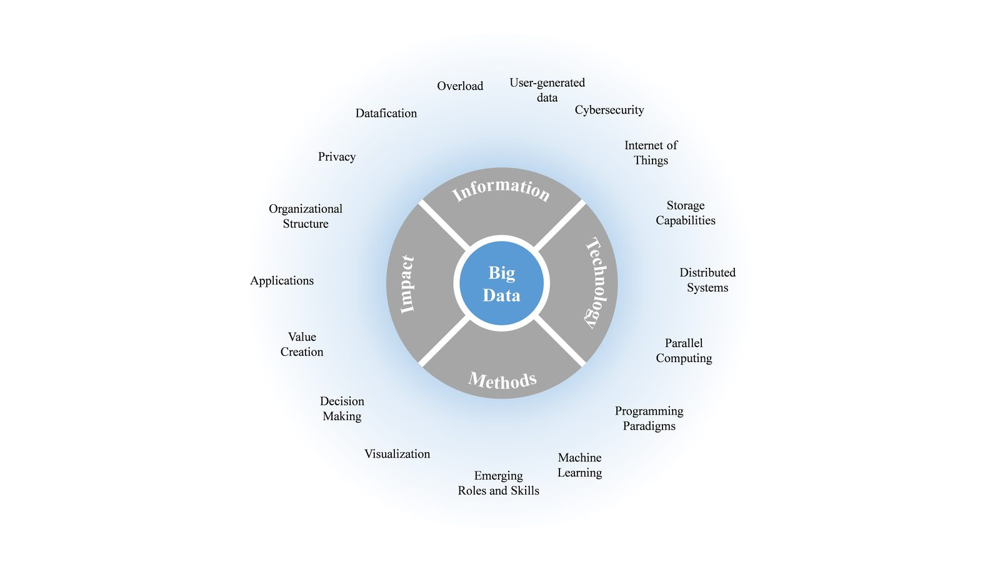

Panoramica
La guida completa per studenti all'IIoT/IoT, attraverso semplici progetti.
La guida completa per studenti all'IIoT/IoT, attraverso semplici progetti.
Documentare il funzionamento del materiale fornito attraverso dei progetti legati all'IIoT (Industrial Internet of Things).

Kit didattico con scheda Arduino UNO R3 per la prototipazione dei progetti IIoT.
Sensore ambientale LoRa per il monitoraggio di temperatura e umidità.
Presa smart LoRa per l'accensione e lo spegnimento remoto dei carichi.
Sensore LoRa per il rilevamento di perdite e dello stato degli ambienti.
Sensore di distanza a ultrasuoni LoRaWAN per la misura del livello.
Gateway LoRaWAN per l'inoltro dei pacchetti al Network Server.
Sensore indoor LoRaWAN per il monitoraggio della qualità dell'aria.
Kit da 37 sensori per Arduino per la prototipazione su breadboard.
Kit con Raspberry e Arduino per gateway, broker ed edge computing.
Fondatore, scrittore e programmazione: Angelo De Florio.
Supporters: Arcangelo Gabriele Dispoto, Alessandro Cassone e Maurizio Mazzeo.
L’Industrial IoT (IIoT) rappresenta l’applicazione delle tecnologie IoT nei contesti industriali, abilitando il monitoraggio e l’ottimizzazione di processi produttivi, asset e infrastrutture.
L’Internet of Things (IoT) consiste nella connessione a Internet di milioni di sensori e dispositivi intelligenti, i quali raccolgono e condividono dati destinati all’analisi di aziende e organizzazioni (aziende, città, governi, ospedali e individui).
Più tecnicamente, per Industrial IoT ci si riferisce all’applicazione di tecnologie di connettività e sensori in ambito industriale, con l’obiettivo di raccogliere dati in tempo reale, monitorare le prestazioni, ottimizzare i processi e consentire una maggiore automazione e controllo dei processi di produzione e logistica.
Mentre l’IIoT è specificatamente rivolto al settore industriale, l’IoT riguarda anche tutti i dispositivi connessi utilizzati nel contesto quotidiano, come i dispositivi della Smart Home, Smart Metering, Smart City e la Smart Mobility.
Un sensore è un dispositivo che rileva cambiamenti o proprietà fisiche, chimiche o biologiche nell’ambiente circostante e li converte in un segnale comprensibile, di solito di tipo elettrico. Alcuni esempi di sensori smart connessi sono: campanelli, porte da garage, termostati, dispositivi indossabili, semafori, parcheggi e molti altri.
Un sensore deve essere collegato a una rete in modo che i dati raccolti possano essere archiviati e condivisi. Ciò richiede una connessione Ethernet cablata o una connessione Wireless a un controller. Sebbene sia possibile impiegare l’Ethernet o il Wireless, sono più praticabili alternative a basso consumo come Bluetooth LE, Zigbee o LoRa.
I controller sono i componenti responsabili della raccolta dei dati dai sensori e devono garantire la connettività di rete o di Internet. Essi possono avere la possibilità di prendere decisioni immediate oppure inviare dati a un computer più potente per le analisi. Tale computer può trovarsi nella stessa LAN del controller o può essere accessibile soltanto tramite connessione Internet.
I sensori spesso lavorano insieme ad un altro dispositivo chiamato attuatore. Gli attuatori prendono in input un segnale elettrico e lo trasformano in una azione fisica.
I Big Data rappresentano una raccolta di dati così estesa in termini di volume, velocità e varietà da richiedere tecnologie e metodi analitici specifici per l’estrazione di valore.
La definizione riportata in alto consente di mettere in luce le quattro componenti fondamentali del concetto di Big Data, ovvero:

Le tre caratteristiche fondamentali dei Big Data possono essere riassunte con le 3V:
Generalmente, i Big Data vengono generati su più server, solitamente ospitati all'interno dei Data Center. Per la sicurezza, accessibilità e ridondanza, i dati vengono solitamente distribuiti e/o replicati su molteplici server in molti Data Center tutti diversi tra loro, adottando il Cluster Computing. Un Cluster di calcolo (o di computer) è un insieme di computer indipendenti (chiamati “nodi”) connessi tramite una rete che lavorano insieme, attraverso macchine omogenee e vicine tra loro, per apparire come unico sistema centralizzato.
Il Grid Computing è un modello di calcolo distribuito che collega macchine eterogenee (computer e un server) geograficamente distanti tra loro, facendoli funzionare come un unico grande supercomputer virtuale e per condividere risorse inutilizzate.

Architettura o modello di calcolo in cui l'elaborazione e l'archiviazione dei dati avvengono il più vicino possibile al luogo in cui vengono generati, anziché essere inviati a un server centralizzato o al Cloud. Il modello sfrutta i client o i dispositivi degli utenti finali ai “margini” della rete per eseguire una parte essenziale della pre-elaborazione e dello storage richiesto.
In particolare, i dati di un sensore possono essere pre-elaborati “più vicino” al luogo in cui sono stati raccolti. Le informazioni ottenute da tale analisi pre-elaborata possono essere riportate nei sistemi aziendali per modificare i processi, se necessario.
Poiché i dati rilevati dal sensore vengono pre-elaborati dai dispositivi finali all'interno dei sistemi aziendali, la comunicazione tra server e client è notevolmente più veloce, richiedendo meno larghezza di banda rispetto all'invio di dati grezzi al Cloud.
Il Cloud (o letteralmente “nuvola”) è una raccolta di Data Center o gruppi di server connessi. Nel linguaggio tecnologico, è un sistema che permette di archiviare ed elaborare dati o usare programmi tramite Internet (solitamente tramite un'interfaccia web accessibile via browser), sfruttando server remoti anziché la memoria locale del proprio dispositivo (in poche parole, il computer di un altro).
A me e un altro gruppetto non piacque quando all'MIT furono inserite le password in una delle macchine… volli tentare una specie di azione informatica sovversiva… scoprii come decifrare le password e fui in grado di individuare ciò che ogni persona doveva digitare per entrare nel sistema operativo.
L'Open Source è un software il cui codice sorgente è pubblico o accessibile a chiunque in modo completamente gratuito. I termini Free Software (software libero) e Open Source (sorgente libera) indicano quasi sempre lo stesso identico programma o codice, ma entrambi si basano su due concetti filosofici e punti di vista differenti:

Il movimento Free Software vede il Cloud Computing tradizionale con una profonda preoccupazione etica, considerando i server proprietari remoti come una minaccia alla libertà dell'utente.
Pionieri come Richard Stallman hanno sostenuto che usare il web server di qualcun altro possa lasciare gli utenti completamente indifesi e privati del controllo sui propri dati.
Infatti, la maggior parte dei fornitori Cloud usano e modificano il proprio software internamente, ma poiché non distribuiscono i file binari agli utenti, aggirano le clausole di distribuzione Copyleft come la GNU GPL (GNU Public License), il che significa che le modifiche raramente vengono restituite alla comunità.
Per questo la GNU Affero General Public License o GNU AGPL è una licenza di software libero e Copyleft pensata per risolvere questa falla (ASP loophole).

La GNU AGPL è simile alla GNU GPL versione 3, eccetto per il fatto che ha una sezione aggiuntiva (nr. 13) per quanto riguarda la rete di calcolatori. Questa sezione richiede che il codice sorgente, se modificato, sia reso disponibile a chiunque utilizzi il prodotto sulla rete.
Unix è uno storico sistema operativo multiutente e multitasking, originariamente sviluppato in linguaggio di programmazione C alla fine degli anni '60 dai laboratori Bell di AT&T da Ken Thompson e Dennis Ritchie. Unix è nato come evoluzione del sistema Multics (Multiplexed Information and Computing Service), uno dei primi sistemi operativi a condivisione di tempo.
GNU è una ampia collezione di software libero che può essere sfruttato come sistema operativo o come parti per altri sistemi operativi.
“GNU's Not Unix!” è un acronimo ricorsivo e sta ad indicare che la progettazione di GNU è simil-Unix, ma differisce da Unix essendo software libero e privo di codice Unix.

Richard Stallman faceva parte di un gruppo di sviluppatori ai laboratori dell'Intelligenza Artificiale del MIT che lavorava all'Incompatible Timesharing System, un sistema operativo sviluppato a tutti gli effetti come un odierno software libero.
Secondo Stallman ciò che lo ha spinto a sviluppare il Progetto GNU era stata una esperienza precedente con Xerox che si rifiutava di fornire l'accesso al codice sorgente di una stampante laser al laboratorio MIT.

Linux è una vera e propria grande famiglia di sistemi operativi liberi ed open source simil-Unix basata sul kernel Linux, la cui prima pubblicazione risale al 17 Settembre 1991 da Linus Torvalds.
Molti membri di questa grande famiglia sono tipicamente forniti come distribuzioni (o distro), i quali includono software di sistema e librerie sviluppate da terze parti come GNU, Red Hat e X.Org. Tuttavia, non tutti i sistemi operativi basati su Linux sono considerati distro, Android ne è un esempio.
Inizialmente, Linux fu progettato come clone di Unix e distribuito sotto la licenza GPL Copyleft.